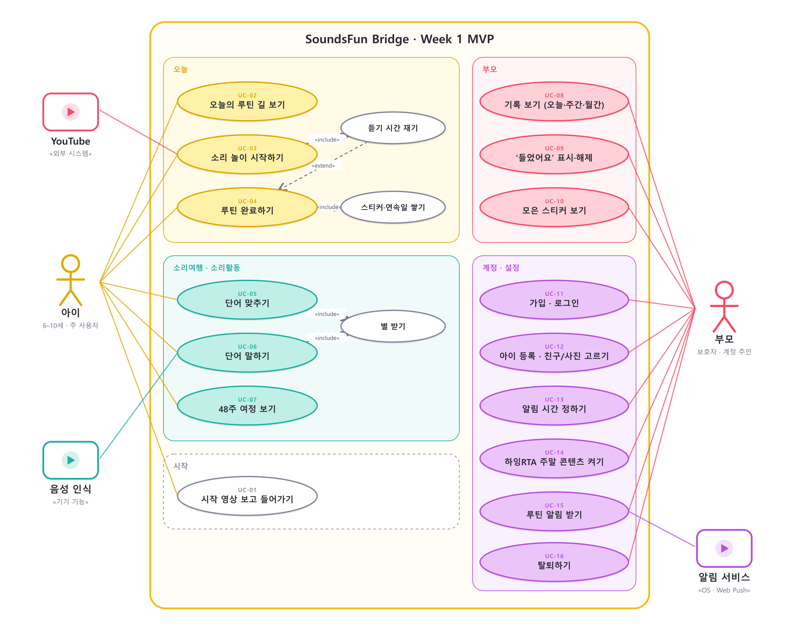

유즈케이스 명세서
행위자
| 행위자 | 종류 | 설명 |
|---|---|---|
| 아이 | 주 행위자 | 6–10세. 길을 따라 루틴을 하고 소리활동을 한다 |
| 부모 | 주 행위자 | 계정 주인. 등록·설정·확인을 한다. 아이 옆에서 함께 쓰기도 한다 |
| YouTube | 외부 시스템 | 영상을 재생한다 |
| 음성 인식 | 기기 기능 | 아이가 말한 단어를 글자로 바꾼다 |
| 알림 서비스 | 외부 시스템 | 기기 알림(앱) 또는 Web Push(웹) |
유즈케이스 다이어그램

| 관계 | 뜻 |
|---|---|
| 소리 놀이 시작하기 «include» 듣기 시간 재기 | 시작하면 항상 시간이 흐른다 |
| 듣기 시간 재기 «extend» 루틴 완료하기 | 목표 시간에 닿으면 자동 완료로 이어진다 |
| 루틴 완료하기 «include» 스티커·연속일 쌓기 | 완료는 언제나 보상으로 이어진다 |
| 단어 맞추기·말하기 «include» 별 받기 | 맞히거나 통과하면 별 |
유즈케이스 목록
| ID | 이름 | 행위자 | 관련 요구사항 |
|---|---|---|---|
| UC-01 | 시작 영상 보고 들어가기 | 아이 | FR-101 |
| UC-02 | 오늘의 루틴 길 보기 | 아이 | FR-301–308 |
| UC-03 | 소리 놀이 시작하기 | 아이, YouTube | FR-401–403 |
| UC-04 | 루틴 완료하기 | 아이 | FR-404–407 |
| UC-05 | 단어 맞추기 | 아이 | FR-502–505 |
| UC-06 | 단어 말하기 | 아이, 음성 인식 | FR-506–508 |
| UC-07 | 48주 여정 보기 | 아이 | FR-501 |
| UC-08 | 기록 보기 | 부모 | FR-601–605, 608 |
| UC-09 | ‘들었어요’ 표시·해제 | 부모 | FR-606–607 |
| UC-10 | 모은 스티커 보기 | 부모 | FR-608 |
| UC-11 | 가입·로그인 | 부모 | FR-102–104 |
| UC-12 | 아이 등록·친구/사진 고르기 | 부모 | FR-201–204 |
| UC-13 | 알림 시간 정하기 | 부모 | FR-701, 703 |
| UC-14 | 하잉RTA 주말 콘텐츠 켜기 | 부모 | FR-704 |
| UC-15 | 루틴 알림 받기 | 부모, 알림 서비스 | FR-702 |
| UC-16 | 탈퇴하기 | 부모 | FR-105 |
UC-01 시작 영상 보고 들어가기
| 항목 | 내용 |
|---|---|
| 시작 조건 | 앱을 연다 |
| 끝난 뒤 | 로그인 전이면 로그인, 아이가 없으면 아이 등록, 아니면 오늘 탭 |
- 시작 영상이 소리 없이 재생되고 “화면을 눌러 시작해요”가 보인다.
- 아이가 화면을 누른다.
- 영상이 사라지고 다음 화면이 나타난다.
- 1a. 소리 버튼을 누르면 영상 소리가 켜진다.
- 1b. 영상을 불러오지 못하면 멈춘 그림을 보여 주고 그대로 진행한다.
UC-02 오늘의 루틴 길 보기
| 항목 | 내용 |
|---|---|
| 시작 조건 | 아이가 등록되어 있다 |
| 끝난 뒤 | 오늘 할 루틴과 상태를 안다 |
- 인사 카드와 오늘 진행(완료 수, 분, 막대)을 본다.
- 1번부터 번호가 붙은 정거장이 길로 이어져 있다. 정거장마다 캐릭터, 이름, 분이 있다.
- 끝낸 정거장은 완료 표시가 붙고, 거기까지의 길이 색칠되어 있다.
- 아래로 내리면 다음 3일의 길이 작게 보인다.
- 2a. 주말이고 하잉RTA가 켜져 있으면 5·6번 정거장이 더 있다.
- 2b. 시작일 전이면 길 대신 시작 날짜 안내가 나온다.
- 2c. 7일이 끝났으면 마침 안내가 나온다.
UC-03 소리 놀이 시작하기
| 항목 | 내용 |
|---|---|
| 시작 조건 | 오늘의 정거장을 눌렀다 |
| 끝난 뒤 | 시트 안에서 영상이 재생되고 듣기 시간이 흐른다 |
- 루틴 시트가 올라온다: 이름, 목표 분, 안내 한 줄, 오늘의 한 문장.
- “소리 놀이 시작”을 누른다.
- 시트의 머리 자리가 영상 칸으로 바뀌고 그 자리에서 재생된다.
- 영상이 재생되는 동안만 듣기 시간이 흐른다.
- 2a. 주말 콘텐츠는 영상 하나가 아니라 재생목록이 열린다.
- 3a. 끼워 넣기가 막힌 영상은 “유튜브에서 열기”가 나오고, 이때는 예전처럼 시계로 시간을 잰다.
- 4a. 멈춤을 누르거나 영상을 멈추면 시간이 쌓이고 멈춘다. 덮개나 “이어서 듣기”를 누르면 다시 흐른다.
- 4b. 시트를 닫거나 앱을 내리면 영상과 시간이 함께 멈춘다.
UC-04 루틴 완료하기
| 항목 | 내용 |
|---|---|
| 시작 조건 | 루틴 시트가 열려 있거나 시간이 흐르는 중이다 |
| 끝난 뒤 | 기록에 완료 방식과 시각이 남고 스티커가 1장 늘었다 |
- 듣기 시간이 목표 분에 닿는다.
- 앱이 루틴을 완료로 바꾼다 (
timer). - 축하 표시가 뜨고, 길의 정거장이 완료로 바뀐다.
- 1a. 아이(또는 부모)가 “오늘 완료했어요”를 누르면 바로 완료된다 (
manual). 목표 분이 기록된다. - 3a. 오늘의 마지막 루틴이면 하루를 마친 축하를 보여 준다.
- 이미 완료한 루틴은 다시 완료되지 않고 되돌릴 수도 없다.
UC-05 단어 맞추기
| 항목 | 내용 |
|---|---|
| 시작 조건 | 소리여행 탭에서 소리활동을 눌렀다 |
| 끝난 뒤 | 문제별 정답 여부와 걸린 시간이 남는다 |
- 단어 소리가 나온다. 다시 듣기 버튼이 있다.
- 보기 중 하나를 고른다.
- 맞으면 별과 칭찬, 틀리면 정답을 알려 준다. 화면 높이는 변하지 않는다.
- 8문제를 마치면 단어 말하기로 간다.
- 2a. 짝 맞추기는 그림과 단어를 모두 이으면 끝난다.
- 연령 6세는 글자 없이 그림만, 보기 수도 적다.
UC-06 단어 말하기
- 단어 그림과 소리가 나온다.
- 마이크 버튼을 누르고 말한다.
- 음성 인식 결과와 단어를 비교해 0.7 이상이면 통과, 별 1개.
- 통과하지 못하면 한 번 더. 그래도 안 되면 정답 소리를 들려 주고 넘어간다.
- 2a. 마이크 권한이 없거나 브라우저가 지원하지 않으면 도움 모드: 부모가 “잘 말했어요”를 누른다 (
passByParent). - 2b. 건너뛰기를 누르면
skipped로 남는다.
UC-08 기록 보기
- 부모 탭을 연다. 요약 네 칸이 보인다.
- 오늘·주간·월간을 고른다.
- 주간은 루틴 × 요일 표, 월간은 달력이다. 이전·다음으로 옮긴다.
- 아래에서 이번 주 루틴별 완료와 모은 스티커를 본다.
UC-09 ‘들었어요’ 표시·해제
| 항목 | 내용 |
|---|---|
| 시작 조건 | 주간 표에서 오늘이나 지난 칸을 눌렀다 |
| 끝난 뒤 | 그 칸이 부모 표시로 완료되었거나 표시가 지워졌다 |
- 빈 칸을 누르면 “들었어요로 표시할까요?”가 뜬다.
- 표시하기를 누르면 그 루틴이
parent완료로 저장되고 목표 분이 더해진다.
- 1a. 부모가 표시한 칸을 누르면 “표시를 지울까요?”가 뜬다. 지우면 기록이 사라진다.
- 1b. 앱에서 완료한 칸은 “앱에서 완료한 기록은 지울 수 없어요”라고 알려 준다.
- 1c. 미래 칸, 시작일 이전 칸, 평일의 주말 루틴 칸은 눌리지 않는다.
UC-11 가입·로그인
- 이메일, 비밀번호, 비밀번호 확인을 넣고 필수 항목에 동의한다.
- 가입하기를 누르면 아이 등록으로 간다.
- 1a. 이메일 형식, 8자 미만, 비밀번호 불일치는 칸 아래에 알려 준다.
- 2a. 이미 가입한 이메일이면 로그인으로 갈지 묻는다.
UC-12 아이 등록·친구/사진 고르기
- 이름, 연령, 학습 시작일을 넣는다.
- 친구 네 마리 중 하나를 고르거나 사진을 고른다.
- 시작하기를 누르면 기본 알림 시각이 만들어지고 오늘 탭으로 간다.
- 2a. 사진은 정사각형으로 잘라 256px로 줄인 뒤 기기에만 저장한다.
- 2b. 사진 권한이 없으면 기기 설정에서 허용하라고 알려 준다.
UC-13 알림 시간 정하기
- 설정에서 알림을 켠다. 처음이면 기기 권한을 묻는다.
- 알림 시간에서 루틴별 시각을 10분 단위로 바꾼다.
- 저장하면 앞으로의 알림이 새 시각으로 다시 잡힌다.
UC-14 하잉RTA 주말 콘텐츠 켜기
- 스위치를 켠다.
- “주말에 추가할까요?” 확인 창에서 추가하기를 누른다.
- 토·일의 길과 부모 표에 찬양·바이블 스토리가 생긴다. 평일은 그대로다.
UC-15 루틴 알림 받기
- 정한 시각이 되면 알림 서비스가 “○○ 시간이에요”를 보낸다.
- 알림을 누르면 앱이 열리고 그 루틴 시트가 뜬다.
- 1a. 이미 끝낸 루틴이면 알림을 보내지 않는다.
- 1b. 저녁 8시에 남은 루틴이 있으면 한 번 더 알려 준다.
UC-16 탈퇴하기
- 설정에서 탈퇴를 누르고 확인한다.
- 기기의 계정·아이·기록을 지우고 로그인 화면으로 간다.
- 서버가 연결되어 있으면
DELETE /me로 계정과 딸린 모든 행이 함께 지워진다(CASCADE).